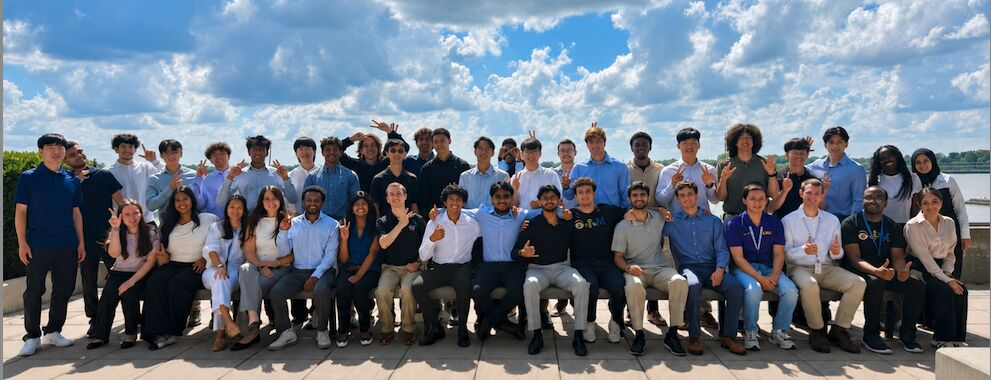

CURRENT / HONORS CAPSTONE
Honors Capstone Thesis LSU RISE Laboratory · Dr. Felipe Fronchetti
Developing screens and functionality for a virtual-patient training application in Unity. Explore the capstone →
EXPERIENCE
Professional experience, current research, and collaborative leadership.
CURRENT / HONORS CAPSTONE
Developing screens and functionality for a virtual-patient training application in Unity. Explore the capstone →
MAY — JUL 2026
Applied data engineering and AI at the Baton Rouge Future Now Center alongside client work and an intern innovation capstone. See technical projects →

DEC 2024 — PRESENT
Manage IT service requests and write technical documentation for students, faculty, and staff.
MAY 2024 — APR 2025
Completed machine learning training and a collaborative KPMG AI Studio challenge during a year-long fellowship. View the team project →
LEADERSHIP AT IBM
How I helped our team move from competing ideas to a shared proposal.
I worked with ten other interns on a three-round business proposal, contributing research, scripting, presentation planning, and public speaking.
Competition and tension left our team discussing ideas without choosing a direction. I organized a meeting where anyone could pitch an idea, followed by a shortlist and team vote.
We chose the idea my partner and I proposed and organized our contributions around each other's strengths. That collaboration helped us reach the top 5 of 28 teams.
ROUND 1 / 28 TEAMS
I helped research and script our recorded submission. We advanced to the top 12.
ROUND 2 / TOP 12
For an eight-minute presentation to managers, I helped condense the proposal, select speakers by their strengths, and delivered a speaking portion. We advanced to the final round.
ROUND 3 / TOP 5
We revised our slides after feedback and rehearsed for executives and approximately 200 interns nationwide.
Leadership can mean creating a fair process that turns discussion into action. I'll bring that lesson into technical teams: make room for different perspectives, agree on how decisions are made, and adapt communication to the audience.